Главная
(current)
Об авторах
Содержание
Медиатека
Online-контроль
Глоссарий
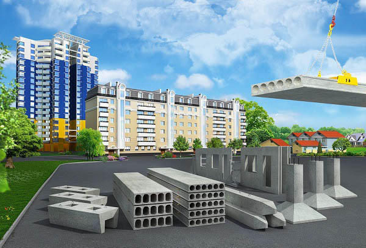
ГЛАВА 1. СОСТАВ И СТРУКТУРА СТРОИТЕЛЬНЫХ МАТЕРИАЛОВ
Интересно знать: Видеолекция «Классификация и строение строительных материалов»
ГЛАВА 2. СВОЙСТВА СТРОИТЕЛЬНЫХ МАТЕРИАЛОВ
Интересно знать: Механические свойства строительных материалов
Интересно знать: Прочность и твердость стеновых материалов
Интересно знать: Строение, химические и физические свойства благородных металлов
Интересно знать: Адгезия
Интересно знать: Как выбрать радиационно безопасный стеновой строительный материал?
Видеолекция «Свойства строительных материалов».
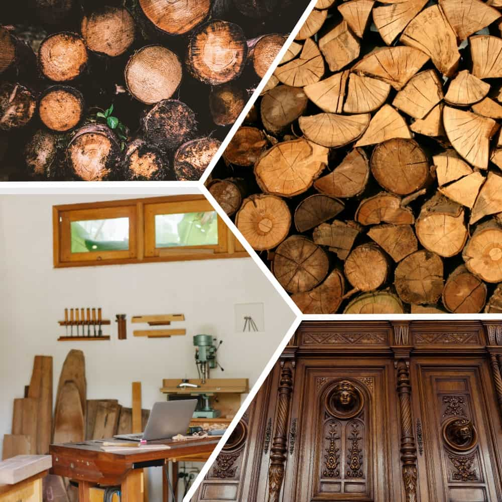
ГЛАВА 3. МАТЕРИАЛЫ И ИЗДЕЛИЯ ИЗ ДРЕВЕСИНЫ
Интересно знать: Физические свойства древесины
Интересно знать: Механические свойства древесины
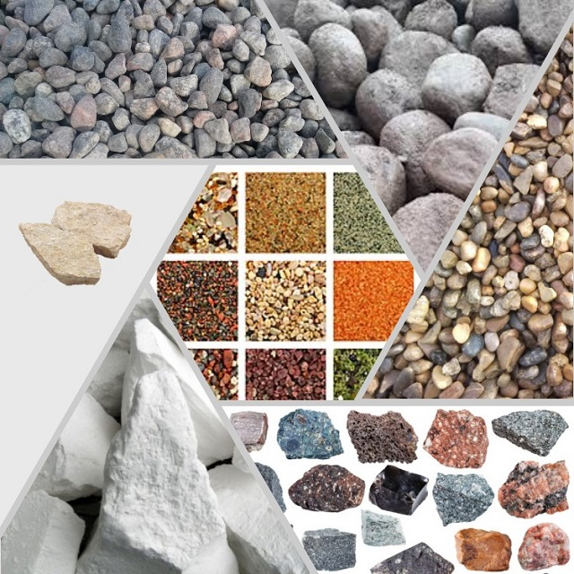
ГЛАВА 4. ПРИРОДНЫЕ КАМЕННЫЕ МАТЕРИАЛЫ
Интересно знать: Структура и текстура горных пород
Интересно знать: Магматические горные породы
Интересно знать: Осадочные горные породы
Интересно знать: Метаморфические горные породы
Видеолекция «Горные породы»
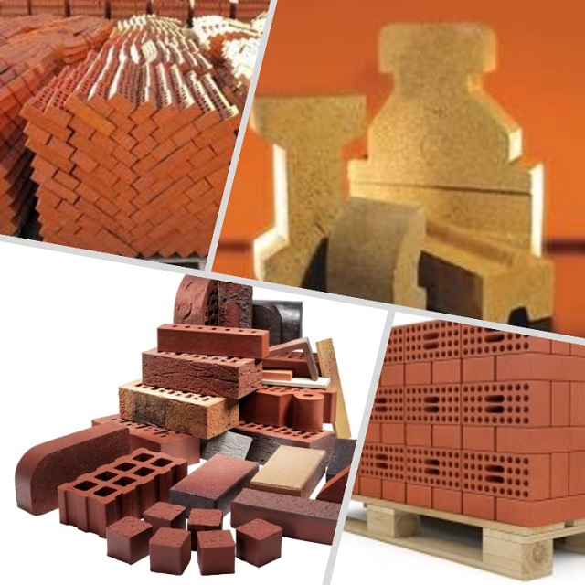
ГЛАВА 5. КЕРАМИЧЕСКИЕ МАТЕРИАЛЫ И ИЗДЕЛИЯ
Интересно знать: Кирпич. Современное производство глиняного кирпича
«Какие бывают виды кирпича? Характеристики и применение кирпича»
ГЛАВА 6. МИНЕРАЛЬНЫЕ ВЯЖУЩИЕ ВЕЩЕСТВА, МАТЕРИАЛЫ И ИЗДЕЛИЯ НА ИХ ОСНОВЕ
Интересно знать: Производство гипса
Интересно знать: Производство цемента
Видеолекция «Вяжущие материалы. Цементы».
Видеолекция «Технология производства белорусского цемента».
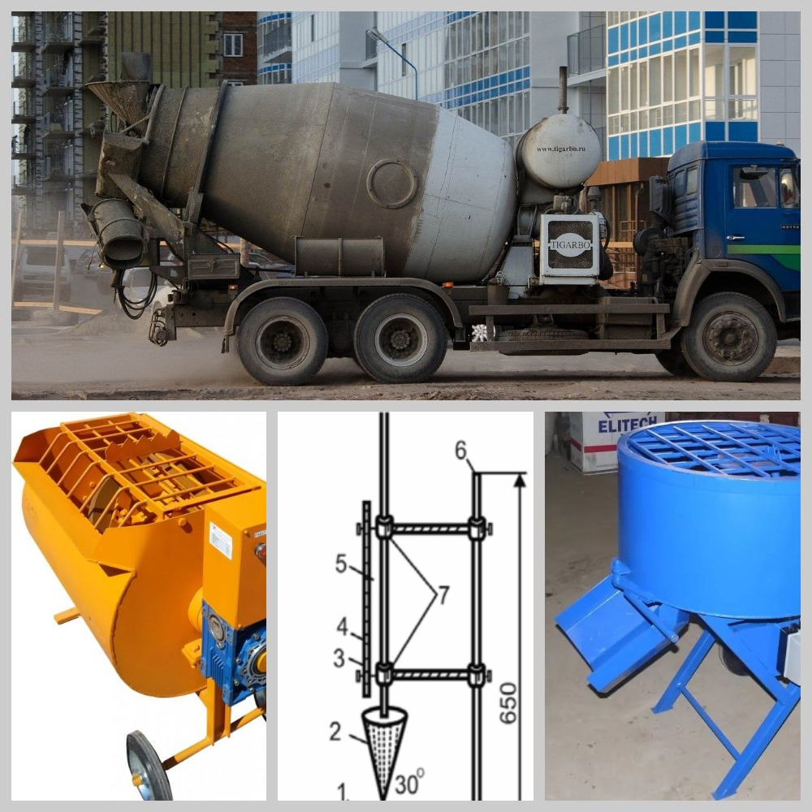
ГЛАВА 8. СТРОИТЕЛЬНЫЕ РАСТВОРЫ, БЕТОНЫ
Интересно знать: Изготовление бетона
Видеолекция «Новые виды бетонов для монолитного строительства».
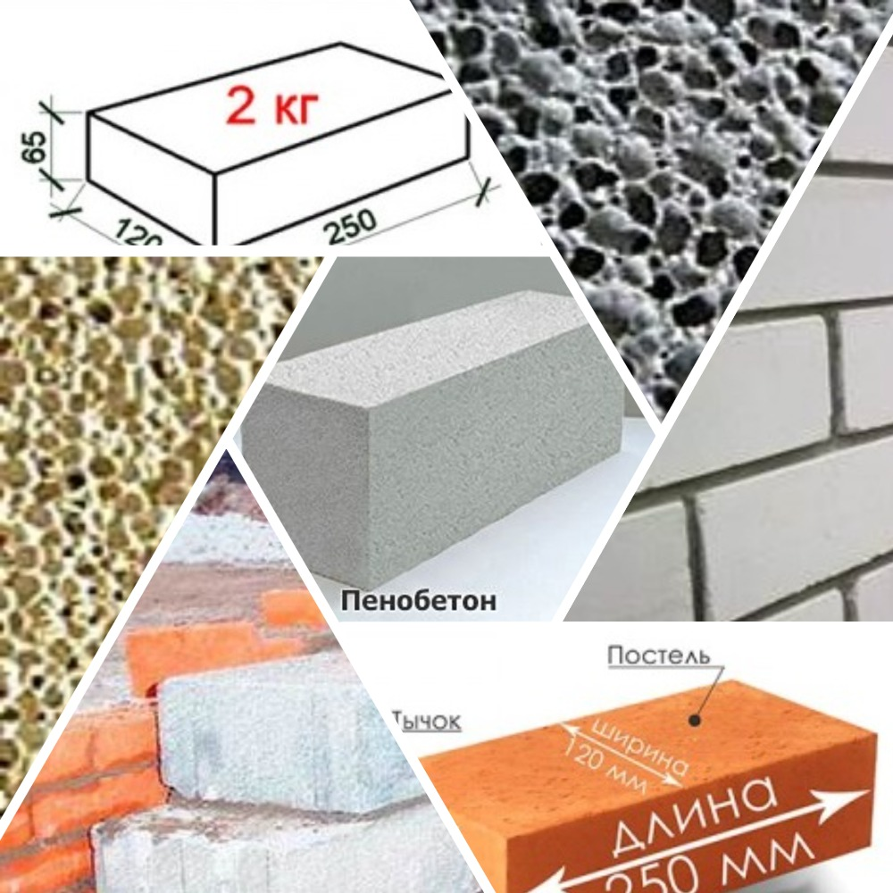
ГЛАВА 9. ИСКУССТВЕННЫЕ КАМЕННЫЕ МАТЕРИАЛЫ
Интересно знать: Процесс изготовления силикатного кирпича
Интересно знать: Производство ячеистого бетона
Интересно знать: Технология производства автоклавного газобетона
Интересно знать: Сравнение газобетона и пенобетона
Видеолекция «Виды блоков. Сравнительная характеристика».
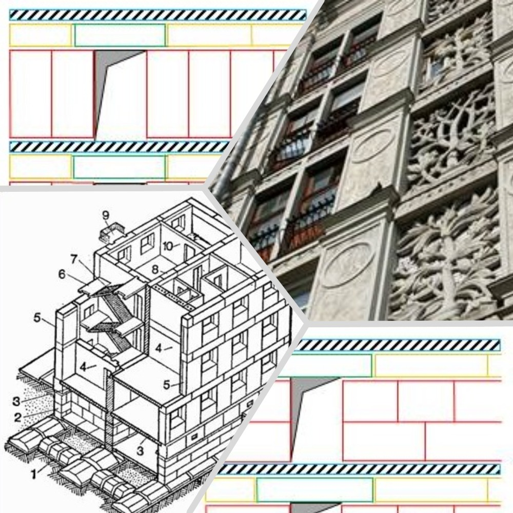
ГЛАВА 10. СТЕНОВЫЕ БЛОКИ
Видеолекция «Высотный дом из крупных стеновых блоков».
ГЛАВА 11. СТРОИТЕЛЬНЫЕ МЕТАЛЛЫ И АРМАТУРНЫЕ СТАЛИ. СВОЙСТВА И ПРИМЕНЕНИЕ
Интересно знать: Доменная печь. Получение чугуна
Интересно знать: Технология получения чугуна
Интересно знать: Конвертерное производство стали
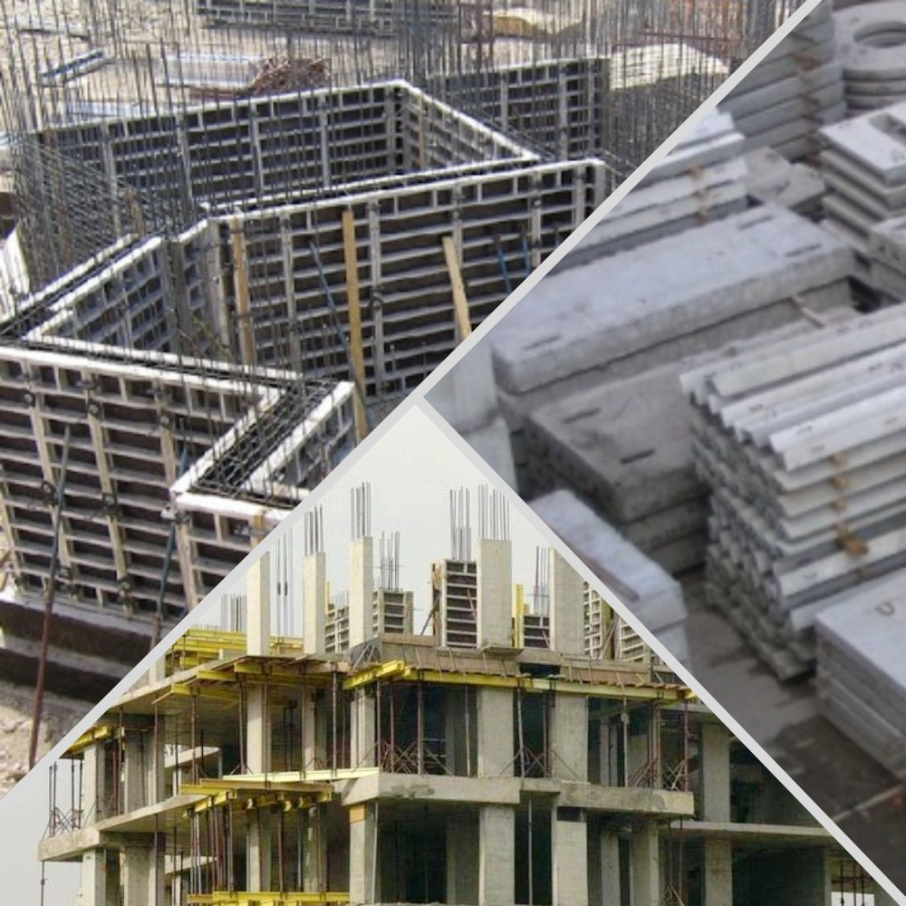
ГЛАВА 12. ЖЕЛЕЗОБЕТОН, ЖЕЛЕЗОБЕТОННЫЕ ИЗДЕЛИЯ И КОНСТРУКЦИИ
Интересно знать: Галилео. Истории изобретений. Железобетон
Интересно знать: Схема монтажа сборно-монолитного здания
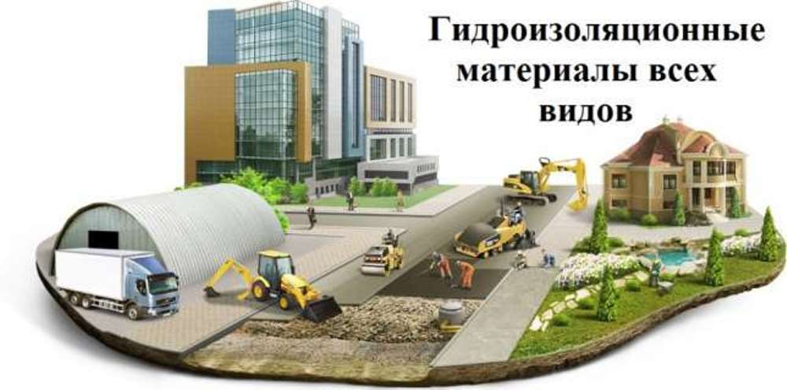
ГЛАВА 14. ГИДРОИЗОЛЯЦИОННЫЕ МАТЕРИАЛЫ
Интересно знать: Битумная гидроизоляция кровли и фундамента
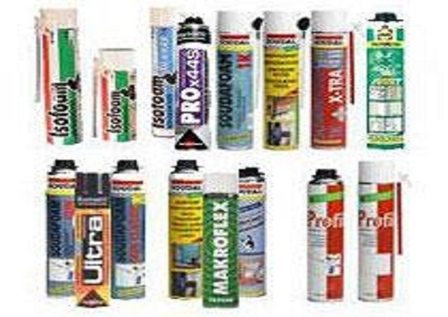
ГЛАВА 15. ГЕРМЕТИЗИРУЮЩИЕ МАТЕРИАЛЫ
Интересно знать: История каучука
Интересно знать: Какой выбрать герметик?
Интересно знать: Герметизация межпанельных швов
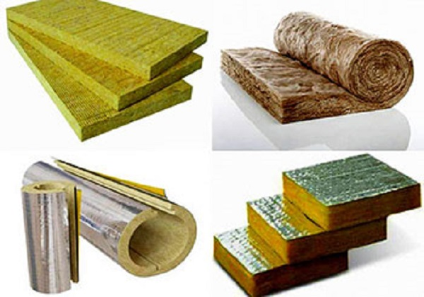
ГЛАВА 16. ТЕПЛОИЗОЛЯЦИОННЫЕ, АКУСТИЧЕСКИЕ МАТЕРИАЛЫ И ИЗДЕЛИЯ
Интересно знать: Теплоизоляционные материалы
Интересно знать: Теплоизоляционные материалы IZOVOL
Интересно знать: Энциклопедия изобретений. Пеностекло
ГЛАВА 17. СТЕКЛО И СТЕКЛОКРИСТАЛЛИЧЕСКИЕ МАТЕРИАЛЫ И ИЗДЕЛИЯ
Интересно знать: Непростые вещи. Стекло
Интересно знать: Изделия из стекла
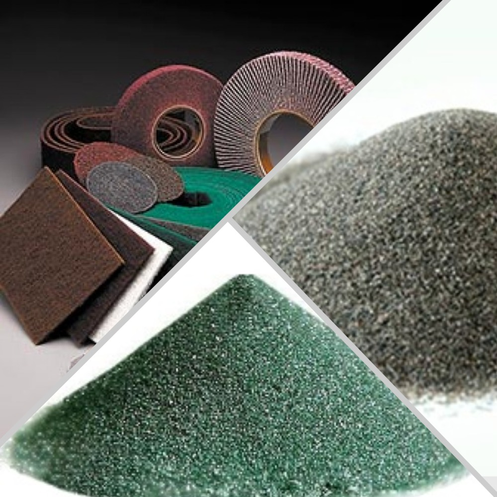
ГЛАВА 18. ВСПОМОГАТЕЛЬНЫЕ МАТЕРИАЛЫ
Интересно знать: Абразивные материалы